Live Metro Issue Tiles
Each Tile displays the Issue key, reporter, summary, issue type, time estimate, completion progress bar, and status icon—styled by priority color and proportional issue-type width.
Monitor live JQL Workspaces, spot sprint blockers by priority color, transition Issue statuses inline, and record accurate hours with a one-click Worklog Timer—authenticated directly through your active browser session.
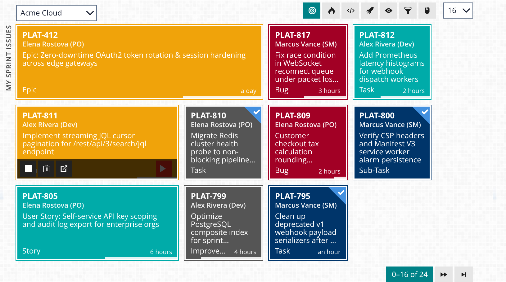
Whether you are shipping code, facilitating daily standups, or grooming the release roadmap, Jironimo adapts its Workspaces and Tiles to the exact signals your role cares about.
Opening a full JIRA browser tab just to check an acceptance criterion, move a ticket to In Review, or log 45 minutes of debugging breaks your mental model. Jironimo keeps your sprint queue one keystroke away.
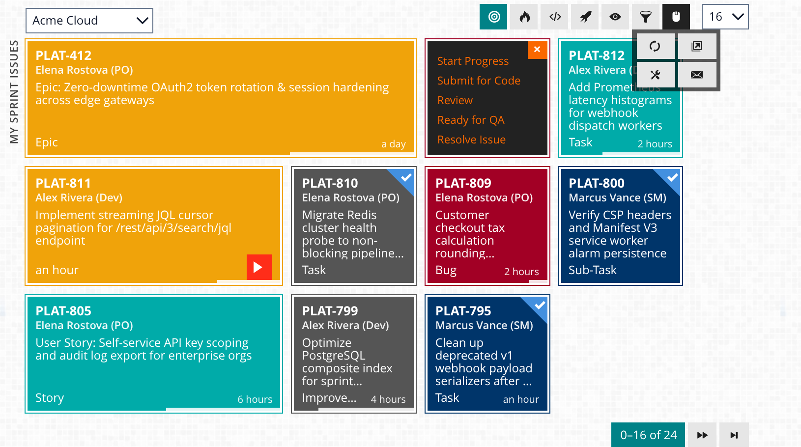
assignee = currentUser() AND sprint in openSprints() AND status not in (Closed, Resolved) ORDER BY priority ASC, updatedDate DESC
status = "In Review" AND assignee != currentUser() AND sprint in openSprints() ORDER BY updatedDate DESC
assignee = currentUser() AND issuetype = Bug AND status not in (Closed, Resolved) ORDER BY priority ASC, updatedDate DESC
Don't wait until the daily standup to discover a P0 blocker or an unestimated ticket added mid-sprint. Jironimo turns your browser into a live impediment radar across every squad you coach.
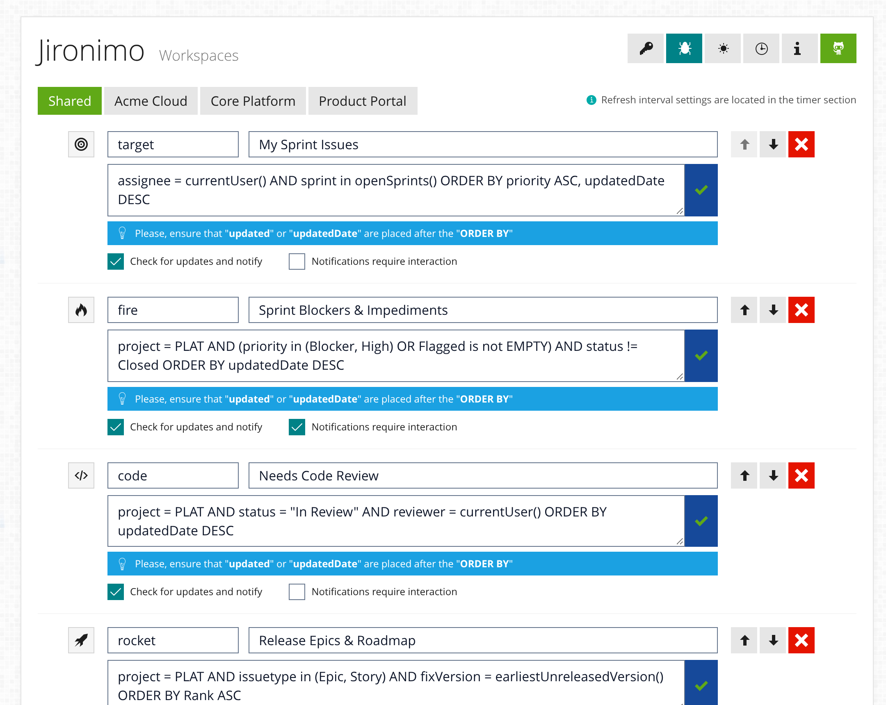
sprint in openSprints() AND (priority in (Blocker, Highest) OR Flagged is not EMPTY) AND status not in (Closed, Resolved) ORDER BY updatedDate DESC
sprint in openSprints() AND status = "In Progress" AND updatedDate < -3d ORDER BY updatedDate ASC
sprint in openSprints() AND assignee is EMPTY AND status not in (Closed, Resolved) ORDER BY priority ASC, created DESC
Standard JIRA lists flatten Epics, Stories, and trivial chores into identical rows. Jironimo's Metro Tile grid restores visual hierarchy through proportional sizing, sampled priority colors, and embedded progress bars.
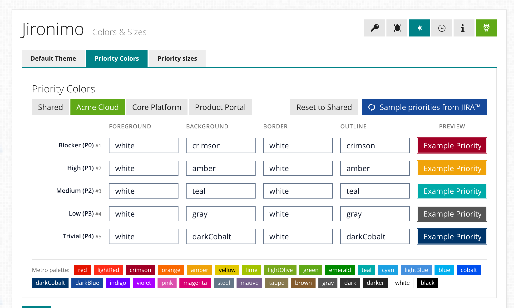
issuetype in (Epic, Story) AND fixVersion = earliestUnreleasedVersion() AND status != Closed ORDER BY priority ASC, updatedDate DESC
status in ("Ready for Acceptance", "In UAT", "Resolved") AND sprint in openSprints() ORDER BY updatedDate DESC
(reporter = currentUser() OR watcher = currentUser()) AND status not in (Closed, Resolved) ORDER BY updated DESC
Built on Chrome Manifest V3, Angular, and PrimeNG with native support for both Atlassian JIRA REST API v3 and v2.
Each Tile displays the Issue key, reporter, summary, issue type, time estimate, completion progress bar, and status icon—styled by priority color and proportional issue-type width.
Track elapsed time directly on any Issue. Stop the timer after at least one minute to automatically submit a formatted worklog entry to JIRA (including ADF comments on REST API v3), or discard with one click.
Fetch available workflow transitions for any Tile and switch statuses in place. Middle-click or double-click any Tile when you want to open the full JIRA ticket in a background tab.
Configure up to 10 JIRA Accounts. Paste any issue or board link and click Verify—the Connection Probe normalizes the URL and tests /rest/api/3/myself and /rest/api/2/myself automatically.
Scope JQL Workspaces to a single Account or share them across all Accounts. Validate JQL syntax live, reorder tabs, import favorite JIRA filters, and receive background desktop notifications.
Jironimo never asks for or stores your password, and never routes data through third-party middleware. It reuses your active browser session and optionally syncs preferences via Google Chrome Sync.
No API tokens to generate, no webhooks to configure, and no server plugins required beyond standard JIRA REST API access.
Log in to your Atlassian JIRA Cloud or Data Center instance in any normal browser tab so your session cookie is active.
Open Jironimo Settings, paste any JIRA project or issue URL, and click the Verify button. Jironimo detects your base URL and REST API version (v3 or v2) automatically.
Import your favorite JIRA filters into Workspaces, sample your server's Priority Colors, and press Alt + J (Windows/Linux) or ⌘ + J (Mac) anytime.
High-resolution Chrome Web Store screenshots and interface overviews across every view.
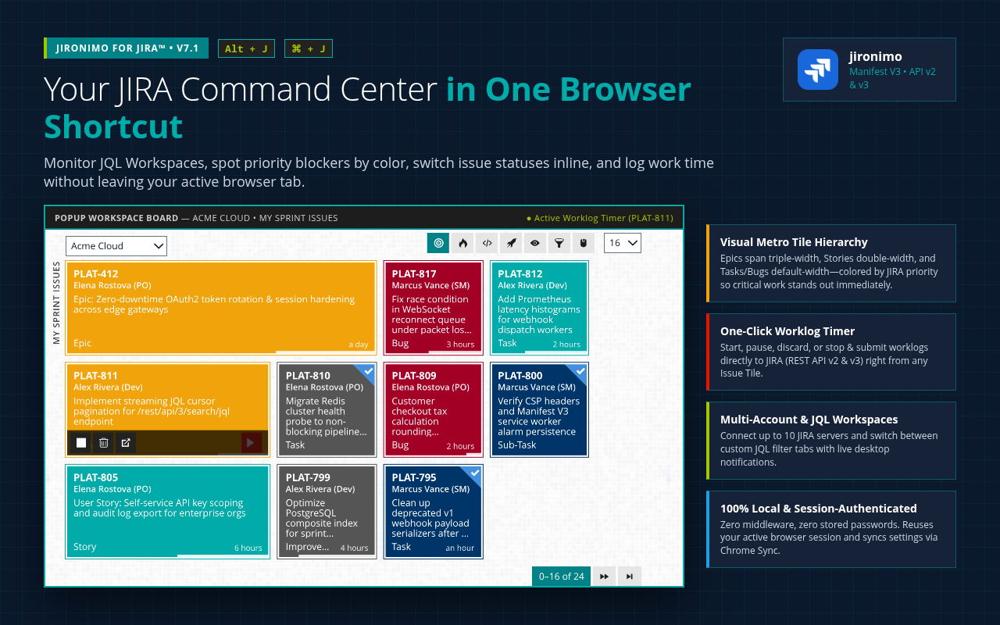
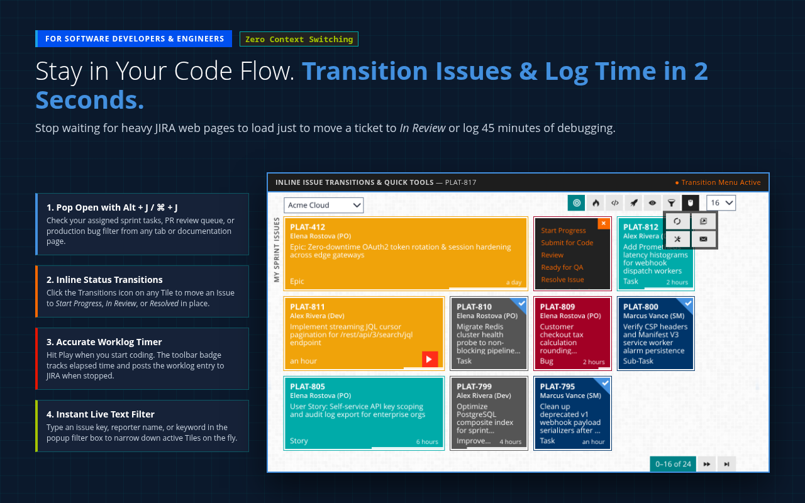
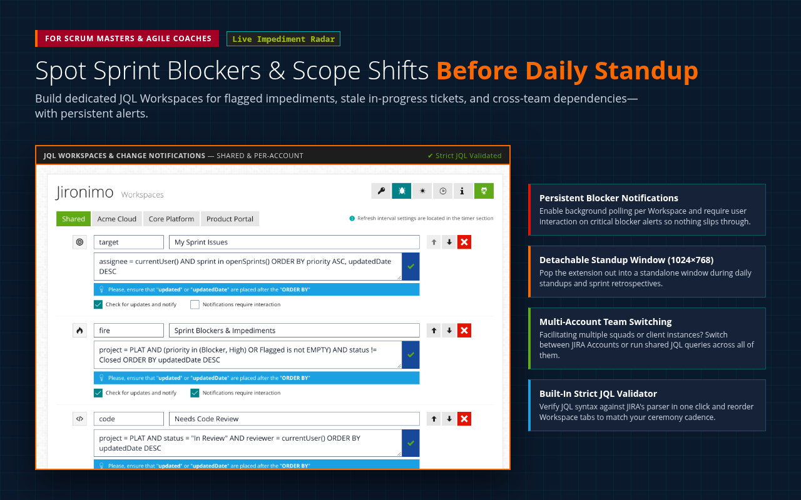
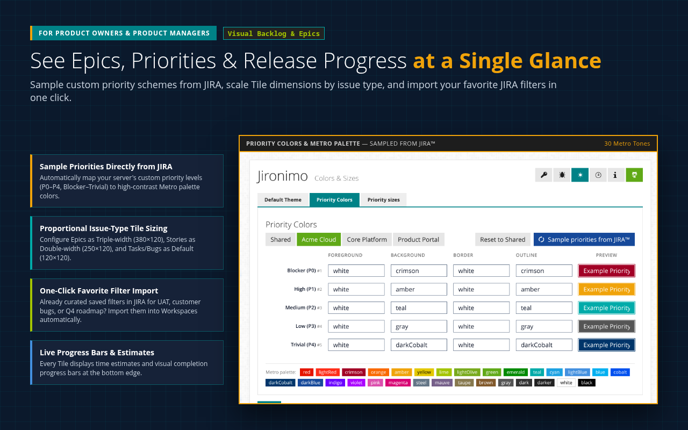
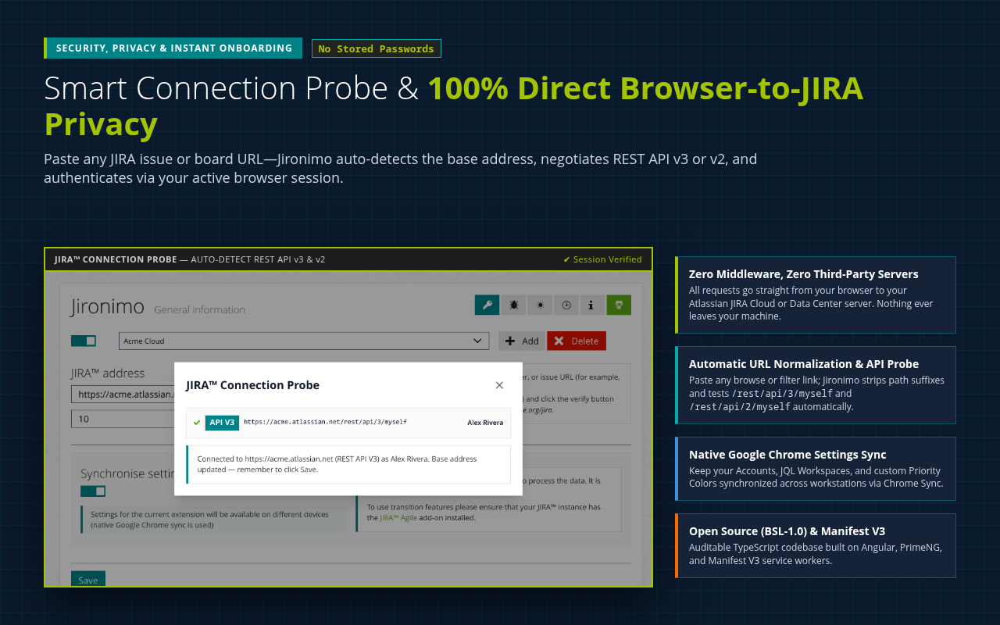
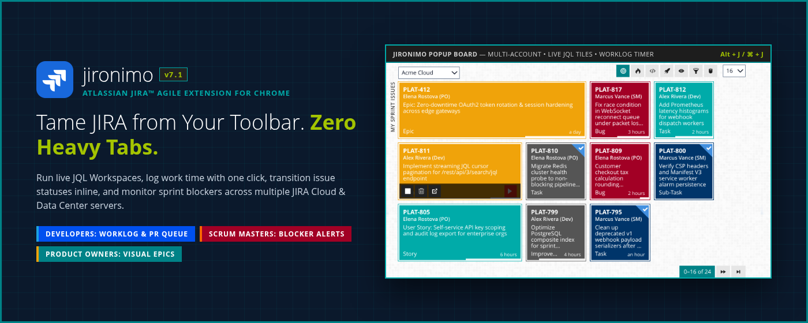
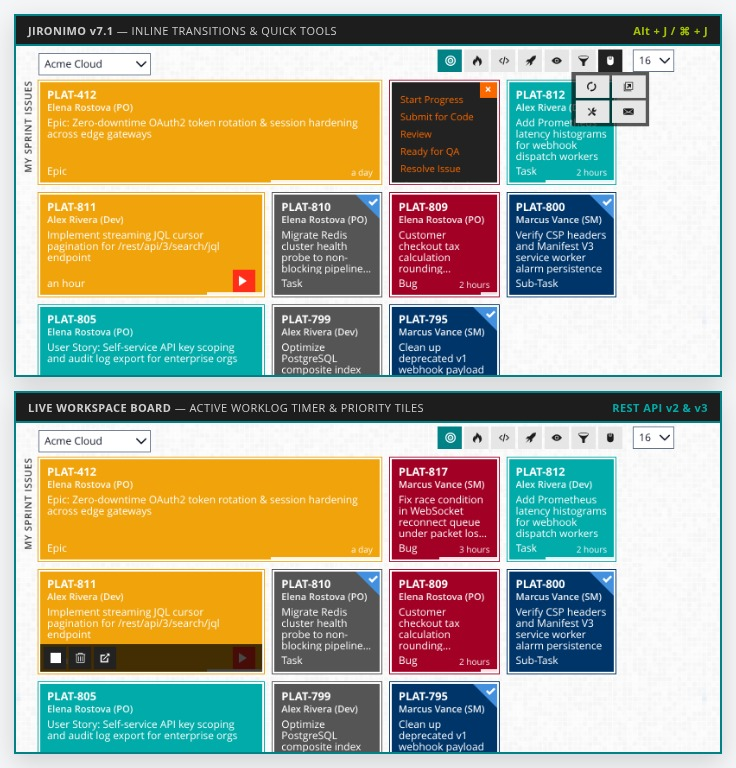
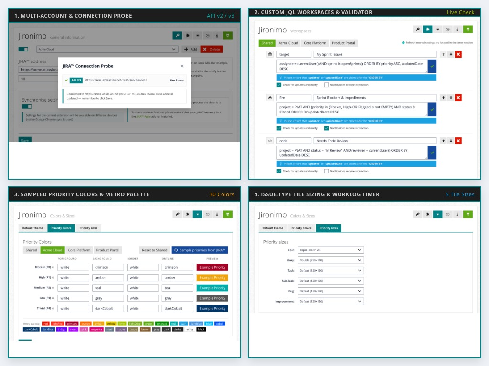